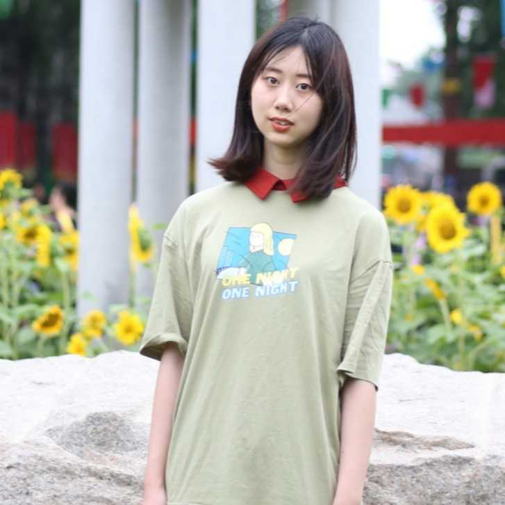

Prospective students:
I will be recruiting PhD students to start in Fall 2020.
If you are a prospective PhD student interested in working with me, please apply
to the UMSI PhD program. If you are a current UM masters student or undergraduate
student interested in working with me, please email me with your CV/resume and research interests.
I am particularly interested in working with students who want to conduct research on
one or more of the following topics: 1) life transitions and social technologies 2) transgender
and/or LGBQ+ people and social technologies 3) social media content moderation and marginalized populations.
PhD Students

Dan Delmonaco
PhD Student, co-advised by Gabi Marcu
pronouns: he/him
research interests: health information practices, information access, digital resources

Hayden Le
PhD Student, co-advised by Libby Hemphill
pronouns: they/them or he/him
research interests: computer-mediated communication, computational social science,
natural language processing, human-computer interaction, behavior change
Masters Students

Taika Augustaitis
Masters Student, Information
pronouns: he/him
research interests: social media, social determinants of health, human-computer interaction,
information seeking needs of marginalized communities

Justin Buss
Masters Student, Information
pronouns: he/him
research interests: gender, social media, identity formation and management, information behaviors

Dykee Gorrell
REMS Visiting Masters Student
pronouns: she/her
research interests: data science, machine learning algorithms, technology, climate change, food deserts,
carceral systems, black transgender women, homelessness

Denny Starks
Masters Student, Information
pronouns: they/them
research interests: understanding how transgender and non-binary people of
color practice safety and the types of violence they experience in different contexts
and environments - to design technology to support their safety
Undergraduate Students

AJ Carter
Undergraduate Student, Information
pronouns: he/him
research interests: social media, LGBTQ+, sociocultural anthropology

Shanley Corvite
Undergraduate Student, Information
pronouns: she/her
research interests: social media, user experience

Jasmine Glover
Undergraduate Student, Industrial and Operations Engineering
pronouns: she/her
research interests: social media, behavior, data analytics

Tianxiao (Sharol) Liu
Undergraduate Student, Psychologypronouns: she/her
research interests: HCI, social media, user experience, public health 
Lingbo Wang
Undergraduate Student, Statistics
pronouns: she/her
research interests: social media, computational social science, marketing models

Zu Weinger
Undergraduate Student, Sociology
pronouns: he/him
research interests: trans people's experiences and interactions with
technology, social media, and the world

Brookelyn Wheeler
Undergraduate Student, Biopsychology, Cognition, and Neuroscience
pronouns: she/her
research interests: human thoughts and behavior